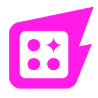
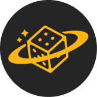
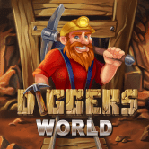
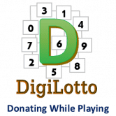
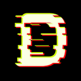
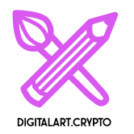
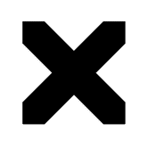

Diapers Finance 持有证明 (PoH) 是权益证明的一种新的替代概念，您可以在持有代币至少 24 小时后领取奖励。 整个 ShitPlanet 中只有 100 个 $DYPR 代币。 10 $DYPR 被锁定为在 DEXshit 上交易的初始 LP。剩余
 DICE 3D 凭借 100% 的 TRX 分红和加密货币增长机制，Dice 3D 旨在为游戏中的玩家提供最佳的投资回报率。 骰子（单数骰子或骰子；来自古法语 dé；来自拉丁语 datum “给定
 Dice Planet 骰子星球是一款链上骰子游戏。 Dice Planet 基于 ThunderCore 上的随机数生成器，完全建立在链上。完全公平和有趣。 我们是 Mini Planet Dice，我们很高兴推出我们的第一个 Kic
DIG for IT! DIG for IT 是一个 TRON 区块链游戏平台，您可以在其中玩并赚取 TRX。我们赚取加密货币的 TRON 区块链游戏是使用 Unity3D 构建的，以最大限度地提高游戏体验，将区块链游
 Diggers World Diggers World 是一个具有深思熟虑的经济模型的 NFT 项目。玩家自己选择游戏策略，同时有机会赚钱。 获取各种资源，制作工具并升级它们。在采矿中试试运气，获得独家
 DigiLotto 边玩边捐款，我们相信通过 DigiLotto 旗下的各种可持续和慈善计划来支持我们服务的社区，并赋予我们作为 DigiLotto 核心的人民的权力。 DigiLotto 是我们如何实施区块链的另一个很
 DIGITAL Collectibles 受音乐启发的艺术！随着每首新歌的发布，开始构建您的 DIGITAL Cassette Collection。数字收藏品是虚拟物品的独特或限量版副本。通常有视觉元素，例如数字
Digital Media Tokens 数字媒体代币或 DMT 是奖励给 CULT.Today 读者的注意力代币。 CULT 是加密城市自由主义思想。我们涵盖每日加密新闻和分析。 CULT 获得的广告收入将作为 div 与具有 TronLink 扩展的读者
 DigitalArt 以太坊区块链上的世界上第一个区块链网站 NFT 收藏品市场现在可在 L2（第二层）Polygon 的区块链上使用。运营发展中的虚拟经济 DigitalArt.Crypto 代币“DANL”
 DIGITALAX DIGITALAX 是用于 Web3 时尚和开放元界的去中心化和可分叉协议栈。 DIGITALAX 在这里证明了 web3 时尚是将数百万新用户带入 web3 的缺失桥梁。我们已经建立了一个涵盖数字和实体时尚
DigitalEyes Market Solana 的第一个开放且无需许可的 NFT 市场！交易任何 NFT，安全有保障！NFT 根据收藏通过我们的创建者门户提交的薄荷哈希列表进行身份验证，而标记为“未
DinoBabies Dino Babies in Space 不仅仅是一个 NFT 项目，它是由 Matt Bolinger 创作的社区首部动画系列。 5,500 个 Genesis Dino Babies 中的每一个都允许其持有者参与 Dino Babies in Space 社区金库，并对节目制作的各个方面
DINOPARK TOKEN 来自 JDI Yield 的创建者 (https://jdiyield.com) 恐龙公园是一种通货紧缩的被动回报代币。只需将 $DINOP 放在您的钱包中，您就会看到您的硬币数量增加。每笔交易都会自动将代币分发给所有
DinoPolis DinoPolis 是一个 Mining NFT 项目，也表示为 Play-To-Earn 游戏。 项目让任何人都有机会成为加密行业的一部分，并在全球加密货币 HashRate 中拥有自己的份额。它由许多基础设施元素组成，其
DinoPool DinoPool Finance 的全部重点是建立一个真正的跨链算法稳定币协议，并在整个 DeFi 生态系统中具有真实的用例。 DinoPool 的机制与 ToxicDeer Finance 的机制相似，只是底层的挂钩代币不同。在 ToxicDeer
Dinosaur Finance Dinosaur Finance 是 Polygon 上的一个相当世代的收益农场，它允许以可持续和有利可图的农业收益永久增加价格！ 我们的目标是在 Polygon 上构建一个一体化的 defi 平台，其中包含不同的
DinoStep DinoStep.App 是通过虚拟恐龙赚取 App 的第一步 DinoStep 对于希望加深与虚拟恐龙之间的联系同时也以有意义的方式赚钱的个人来说是一个很好的项目。我们是第一个与 Digital Dinosaur 密切相
DINT Finance DeFi 平台是一个 Uniswap 分叉，它托管一个具有集成环境的高质量去中心化交换交易所，ERC-20 和 BEP-20 代币可以在该环境中上市、交换、汇集、质押、耕种和烘焙（
DireWolves Dire Wolves 是 2000 个随机生成的 NFT 碎片的集合。我们茁壮成长，为我们的持有者带来实用性和价值。加入队伍，探索仅限会员的活动、狼窝、Dire DAO 以及更多即将到
DirtLifeNFTs & Gaming $MFlateable MemeFlate 项目展示了它的第一个 NFT 和游戏市场网站 DirtLifeNFTs & Gaming。 MemeFlate 品牌的这一令人兴奋的部分将发布一个独特的 3000 个 NFT 集合，持有者可以访问诸如 Chainlink 集成 NFTstaking 之
Dirtybird Flight Club Dirtybird 于 2005 年开始作为地下唱片公司，但标志的历史始于中学时的 Claude VonStroke，当时他正在画愚蠢的小鸟，希望能让他的兄弟姐妹发笑。你在这里看到的
DistributedTown (DiTo) DistributedTown 是协作经济学的新标准。我们正在建立一个相互关联的、自主的社区网络。 它允许任何人加入或创建自己的 - 它基于 DiTo 相互信用和称为 SkillWallet ID 的通用登录。 在我
Divial Mutual Divial Mutual 是 DeFi 的保险。由人制造，由人驱动。 DeFi 和更具体的 BSC 就像我们所说的黑暗森林。 确保开始赚取我们的 DVL 代币并保护 100% 的资金！ 预售现已开启！ 如果您在移动
Dlease BuildTeam 的旗舰产品 Dlease.io 是首个 Hive Power 委托租赁市场，于 2017 年年中发布，旨在将委托人与希望租用质押委托证明 (DPOS) 资产实用程序的用户联系起来提升他们的职位，通过更大
DLUX Decentralized Limitless User eXperiences 是一个 XR 友好的前端，适用于发布到 IPFS 的 dApp。凭借其自己的代币化经济，任何帖子都可以使用 Hive 发布，并在 HIVE 和 DLUX 中获得奖励。它有一个创新的
dmail 新互联网上的电子邮件 Dmail 是一個類似於 Snapmail 的概念，這個想法是從 Delicious.com 內部人員自身的親身經歷而來，他們想**透過 Email 來發送敏感資訊，但又希望可以獲得更好的
Dmarket DMarket 市场使数百万游戏玩家和电子竞技爱好者能够使用一整套先进的游戏技术和金融科技功能（包括 Target/Bid、Instant Sale 和 DMarket Circular Excha
Dmd.Finance Dmd.finance 是 EOS 上的第一个收益农业，这表明了它对 YFI 的尊重。没有预挖，没有创始人股份，没有VC利益，每个参与者平等。DMD钻石（dmd.finance）
DNA Dollar $DNA 算法代币是快速发展的生态系统的支柱，旨在带来流动性。Cronos 上的第一个算法稳定币，通过铸币税与 1 美元的价格挂钩。- 将 DNA LP 分解为 DNA 和 USDC 将


 是一个专门的网站")


 算法提供支持的去中心化交易平台。")